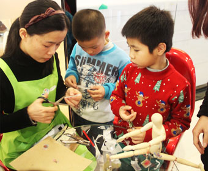

魔法蘑菇越读馆
魔法蘑菇越读馆魔法蘑菇越读馆隶属广东顺德鹏思立教育有限公司，简称：鹏思立教育，英文名称：Persli Ed.创立于广东顺德，位于大良嘉信城市广场一期东区三楼，占地400多平方米，馆藏2万余本图书，专注于3-12岁儿童的个性化教育，为精英家庭提供一站式高品质的教育管家服务。
魔法蘑菇越读馆，我们只做基于“阅读、探究和数学思维”的个性化学习量身订制

- 1.谁要学？
- 建立学习者档案——初次约见，学生参与各种体验，私人教师观察记录，测评师向家长了解学习者信息。
- 测评数据收集——设计特别活动，从“智能测评”和“学习风格偏好”方面进行观察、记录。
- 2.学什么？
- 测评师“会诊”——各方专家或有经验的教师分析数据，形成《评估报告》。
- 测评汇报——与家长、学生交流，拟订《学习支持纲要》。
- 订制学习方案——根据学生、家长的需求以及“智能优势”、“学习风格”订制《学习支持行动方案》。
- 3.怎样学？
- 调配资源——确定匹配的教师，量身订制学习材料，选定学习场所、时间。
- 4.学得怎么样？
- 形成性评估——在学习的过程中完成，帮助学生、教师和家长了解孩子学到了什么以及有能力做什么。
- 总结性评估——根据孩子的特点，引导孩子用独特的形式展示自己所学到的东西。同时将孩子引向更深入更广的学习领域。
魔法蘑菇越读馆的“卓越的能力”具体是指什么呢？
决定孩子成功的最重要因素，不在于我们给孩子灌输了多少知识，而在于我们是否帮助孩子获得了以Grit为首的七种重要的性格特质！鹏思立教育通过个性化教育，培养每一个学习者拥有长期的潜力——气质：Grit坚毅、Zest激情、Self-control自制力、Optimism乐观态度、Gratitude感恩精神、Social Intelligence社交智力、Curiosity 好奇心，让他们在个人成长、职业发展和创造性的追求上做好充分的准备，让每一个孩子都拥有培育幸福的能力！
什么使魔法蘑菇越读馆“私人订制”独一无二？
我们坚持：让文学的力量陪伴孩子成长，每日阅读半小时，每月阅读一本经典名著，每半年一次“越读展示”，变说教教育为自主阅读明事理。
我们倾听学生、家长和老师的特别需求，开展个性化教育以培养每个孩子在阅读素养、气质、艺术、社会情绪等方面的能力。
我们认为学习的整体环境——学校、家庭和社区将塑造学生的认知经历，魔法蘑菇越读馆管家服务将会帮每一个精英家庭去“扮演”这样的角色。
我们擅长“整合资源”，从各种文学作品、杰出人士、有趣的社区环境中汲取资源，并借助数字技术为学习者提供一个立体且真实的学习体验。
我们根据“八大智能”来确定学习者“学什么”，根据 “学习风格”来确定学习者“怎样学”，为每一个学习者量身订制独一无二的学习方案。
我们深度研究的“3-12岁儿童汉语分级阅读方案”，让每一个学习者都感觉是自己感兴趣的，是自己最擅长的，是最能跟上自己节奏的阅读。
我们坚守承诺：每一个孩子配一名私人教师全程观察、记录学习全过程；每一次量身订制都是“会诊制”，每一份方案都是出自各方专家或有经验的教师的集体智慧。
我们倾注精力为每一个孩子创设学习成果展示的平台，让每一个孩子和家长亲历成长的过程。